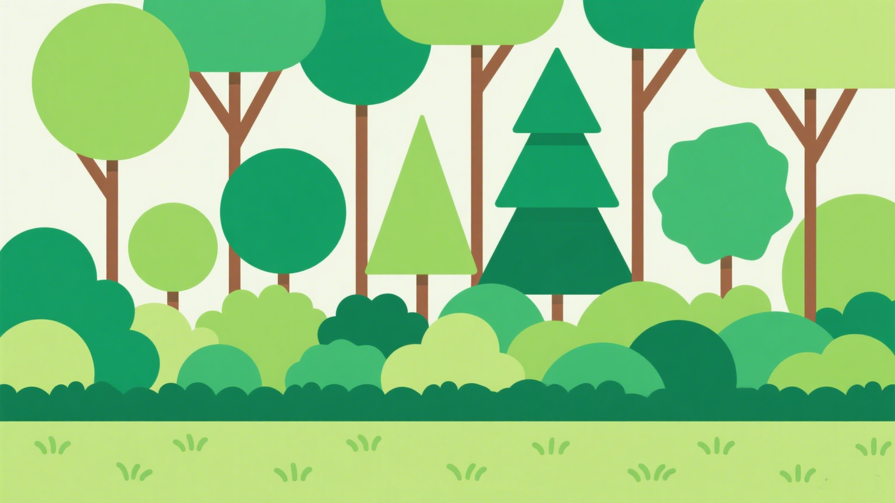
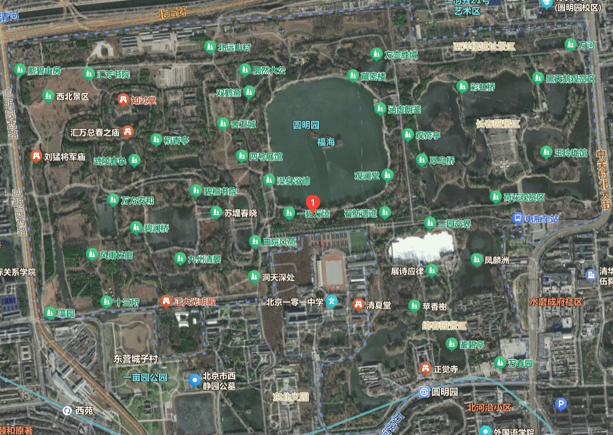
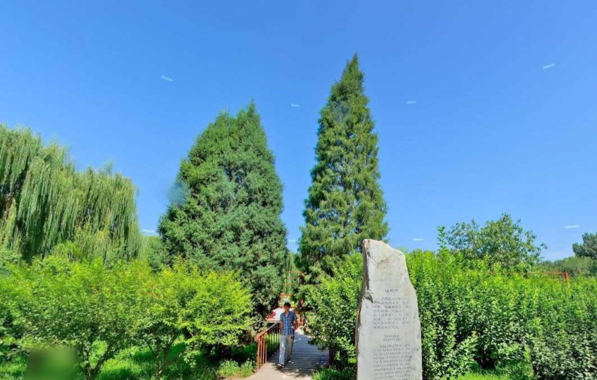
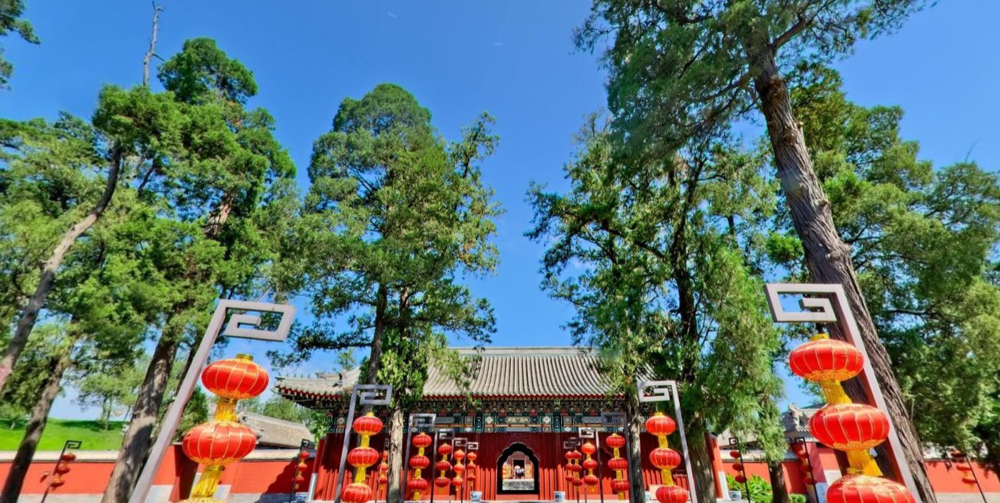
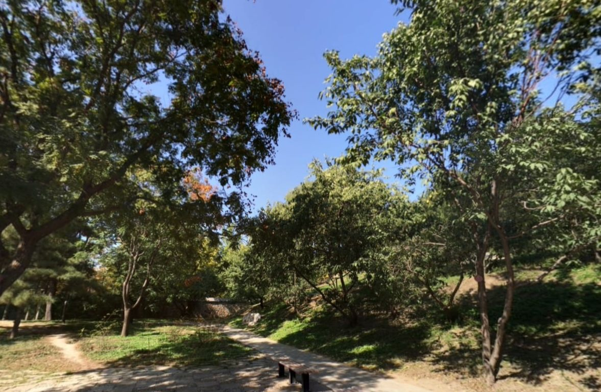
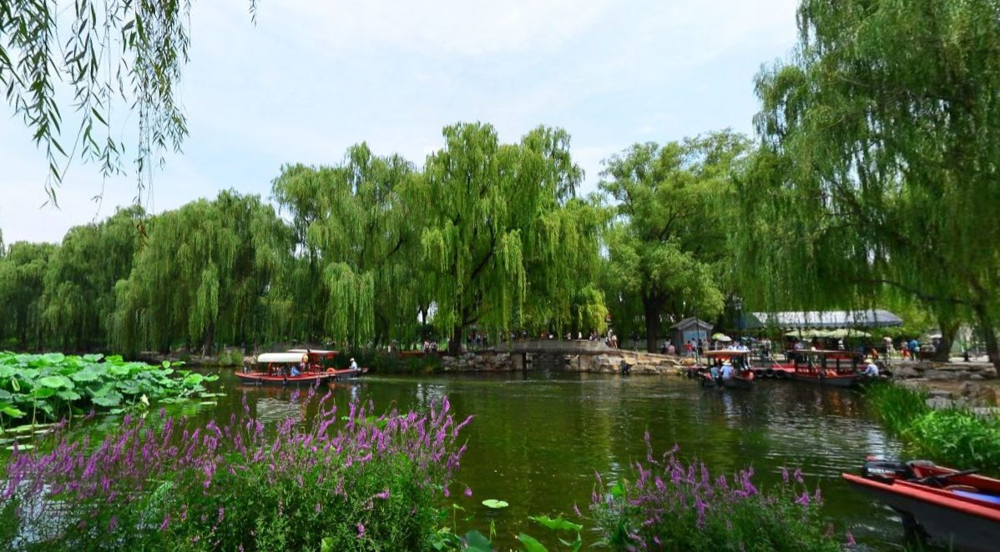
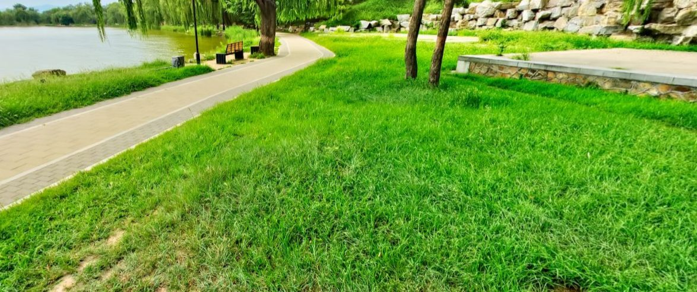

以圆明园为例的三维绿量静态数据全景展示
立体绿化空间分布与生态价值可视化
什么是三维绿量？
三维绿量是指公园内所有植物（树木、灌木、地被等）的枝叶所占据的空间体积总和（单位：立方米），反映绿地的立体生态效益。

三维绿量的核心价值
- 比平面绿地面积更精准体现植物固碳、滞尘、降温能力
- 反映公园绿化立体结构（多层植被搭配的绿量更高）
- 为公园生态规划提供科学的立体量化依据
- 通过训练AI大模型提取出植被覆盖区域，减少人工费效
- 运用遥感影像和GEDI数据以及激光雷达多层次构建三维图谱
三维绿量是衡量公园生态效益的重要指标，比传统的平面面积更能反映绿化质量。
核心数据总览
圆明园总三维绿量
810万立方米
相当于 227 个标准足球场的立体绿化体积
数据统计截至2025年8月
按植物类型的绿量分布
- 乔木绿量：660 万立方米 (75%)
- 灌木绿量：75 万立方米 (12.5%)
- 地被/藤本绿量：75 万立方米 (12.5%)
乔木是绿量的主要贡献者，体现了公园以乔木为主的绿化特色。
绿量密度基准值
23011
立方米/公顷
高于同类公园平均水平 (6,500 立方米/公顷)
公园单位面积的三维绿量，反映立体绿化密集度和生态效益水平。
三维绿量空间分布地图

高绿量区
中等绿量区
低绿量区
主要贡献植物绿量数据

油松
- 单株平均绿量：70 立方米
- 全园数量：180000 株
- 总贡献绿量：126 万立方米

侧柏
- 单株平均绿量：50 立方米
- 全园数量：20,000 株
- 总贡献绿量：100 万立方米

悬铃木
- 单株平均绿量：45 立方米
- 全园数量：15,000 株
- 总贡献绿量：67.5 万立方米

柳树（滨水乔木代表）
- 单株平均绿量：40 立方米
- 全园数量：12,000 株
- 总贡献绿量：48 万立方米
荷花（挺水植物代表）
- 单株平均绿量：0.1 立方米
- 全园数量：1,500,000 株
- 总贡献绿量：15 万立方米

麦冬（地被植物代表）
- 单株平均绿量：0.05 立方米
- 覆盖面积：30 万平方米
- 总贡献绿量：1.5 万立方米
植物结构说明
圆明园采用 “上层高大乔木 + 中层花灌木 + 下层地被及水生植物” 的复合立体配置模式。上层高大乔木（如油松、银杏、悬铃木等）构建起园区绿化的主体框架，占据较大空间，贡献主要的垂直绿量，为整个园区遮荫降温；中层花灌木（像紫薇、丁香、黄刺玫等）填充于乔木间隙，增加绿量的层次与色彩变化，丰富景观效果；下层地被植物（例如麦冬、二月兰、地被菊等）全面覆盖地表，减少黄土裸露，提升绿量的平面密度，而水生植物（荷花、睡莲、菖蒲等）则充分利用园内广阔水面，从水平与垂直方向拓展绿量，这种科学的配置模式极大提升了整体三维绿量效率，营造出丰富多样且生态稳定的园林植物景观。